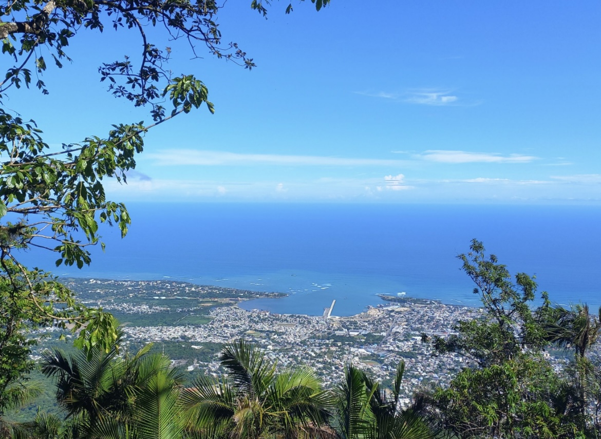

The Dominican Republic is an island nation rich with color, rhythm, and heart. Its culture is a lively fusion of Spanish, African, and Taino influences, expressed beautifully through its food, music, hospitality, and natural beauty.
At the center of Dominican life is joy—a kind of everyday celebration that's felt in everything from a morning greeting to a dance in the street. Dominicans are known for their warmth and generosity, and they spread it to everyone they meet. Whether you're a neighbor or a stranger, you're welcomed like family.
Dominican food is a cornerstone of the culture. Traditional dishes like la bandera Dominicana (rice, beans, and meat), mangu (mashed plantains), and sancocho (a hearty stew) bring people together to cook and eat as one family. Their fresh tropical fruits include mango, guava, and passionfruit, and they are found everywhere. This tropical place has some of the best fruit in the whole world!
Music and dancing are essential to Dominican identity. Merengue and bachata, both born on the island, are more than just genres. If feels like in the air, people live and breath to the beat of the music. It's not uncommon to see dancing in the streets, and to join in.
Dominican culture is also deeply connected to its lush landscape. The island is home to diverse wildlife, from vibrant birds and butterflies to unique reptiles. The natural beauty ranges from mountain ranges and waterfalls to palm-lined beaches and rainforests. Palm trees, hibiscus, and orchids thrive across the island, reflecting the vibrancy of the people who live there. On the coasts, the crystal clear ocean water is breathtaking!
Ultimatley, the Dominican way is to live everyday with joy and love. They always have a song in their hearts, a smile on their face, a celebration to be had, and a story to be told. They are kind to all, and they open their homes for everyone to become apart of thier famlies. It is a great spot to visit or to settle down and raise a family.
Areas
- Jarabacoa
- Venecia
- La Confluencia
- La Colonia
- Villa Olga
- Hoya De Caimito
- Embrujo 3
- Los Cerritos
- Primavera
- Imbert
- Villa Francisca
- Las Carmelitas
- San Felipe
- Las Ginebras
- Padre de las Casas
- La Limonera
- Los Reyes
- Los Salados
- Los Prados
- Las tres Cruces
- Licey
- El chivo
- La Reina
- Licey Al Medio
Companions
- Hermana Silfa
- Hermana Everton
- Hermana Brito de Leon
- Hermana Lemmon
- Hermana Navarro
- Hermana Johansson
- Hermana Figlioli
- Hermana Heggie
- Hermana Anderson
- Hermana Bingham
- Hermana Montero
- Hermana Dominguez
- Hermana Torres
- Hermana Pierce
- Hermana Brito Feliz
Habichuelas con Dulce
Habichuelas con Dulce is a sweet bean drink and it is the best food that the DR has to offer, and Yolanda knows how to make it best!
Water to Wine Graphic
This graphic shows the filtered water being spread across the Dominican Republic. As it is a thrid world country, humanitarian efforts are expanding